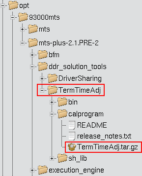
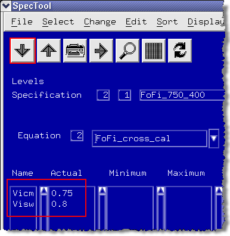

Calibrate test system
For the next steps a cross connect board (Enhanced Diagnostic Interconnect DUT board (E7010D, E7010E) has to be installed on your test system).
Execute the following steps:
- In the ddr_solution_tools directory look for the feature "Time
Adjustment for mid-level Termination" in
/ddr_solution_tools/TermTimeAdj.
The following figure shows the directory structure.

- Copy the compressed example device file TermTimeAdj.tar.gz to a
temporary directory (for example /tmp) and unpack
it:
tar -C /tmp -zxvf TermTimeAdj.tar.gz
- Start SmarTest and change the device to TermTimeAdj.
- Load the Calibrate_X4.tfl test flow (for mid-level X4 mode). Change the directory to/tmp/TermTimeAdj/configuration.
- To start the script,
enter
/opt/93000mts/mts/ddr_solution_tools/TermTimeAdj/bin/CreateTermTimeAdjSetup.pl [-m modelfile]
The model file used is the first matching file from this list:
- The model file explicitly specified with the optional -mmodelfile parameter.
- The <device>/license/model file.
- The /etc/opt/hp93000/soc_common/model file.
The script generates two new files: zstate.pin (pin setup) and zstate.vec (vector setup).
- Open the Testflow Editor and choose , and edit the level specs of the "Calibrate" test suite: Set vicm (=v3h) and vism
(=vih-vil) to the specifications of your target device.

- Download the changed file to your test system.
- See Parameter dialog for mid-level X4 mode or Parameter dialog for mid-level X6 mode for details about the parameters which have to be modified for the different mid-level x-modes.
- Run the test flow.
- Change the device to the target device.
- Copy the pin attribute file to the directory of the real device to be tested.
- Change cross connect board to your target DUT board with the real device.
Functional changes
- Introduced before SmarTest 6.3.2
- MTP 3.0.1: Registering test methods is no longer necessary